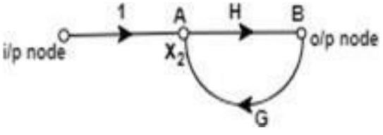
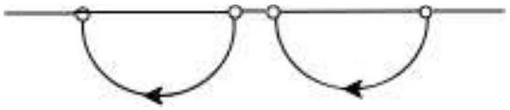

Unit-4: Block Diagram & Signal Flow Graphs (SFG)
Signal Flow Graph (SFG):
Introduction:
Block diagram reduction is the excellent method for determining the transfer function of the control system. However, in a complicated system, it is very difficult and time-consuming process that is why an alternate method, i.e., SFG was developed by S.J Mason which relates the input and output system variables graphically. In the signal flow graph, the transfer function is referred to as transmittance.
Characteristics of SFG:
SFG is a graphical representation of the relationship between the variables of a set of linear algebraic equations. It doesn't require any reduction technique or process.
- It represents a network in which nodes are used for the representation of system variable which is connected by direct branches.
- SFG is a diagram which represents a set of equations. It consists of nodes and branches such that each branch of SFG having an arrow which represents the flow of the signal.
- It is only applicable to the linear system.
Terms used in SFG
Node: It represents the system variable which equals to the sum of all signals. Outgoing signal from the node does not affect the value of node variables.
Branch: Branch is defined as a path from one node to another node, in the direction indicated by the branch arrow.
Node as a summing point:
$x_{1}$ = Summing point
$x_{1}=x_{2}+x_{3}+x_{4}$
Node as a transmitting (outgoing) point:
$x_{1}=x_{5}+x_{6}$
Input node or source: It is the node which have only outgoing branches.
Output node or sink: It is a node which has only incoming branches.
Forward Path: It is a path from an input node to an output node in the direction of branch arrow.
Loop: It is a path that starts and ends at the same node.
B->A and a self-loop at node C." class="content-image">Non-touching loop: Loop is said to be non-touching if they do not have any common node.
Forward path gain: A product of all branches gain along the forward path is called Forward path gain.
Loop Gain: Loop gain is the product of branch gain which travels in the loop.
Construction of SFG and Mason Gain Formula:
The SFG of a system is constructed by the following equations -
Example
Consider a system described by following sets of equations
Where x1 is input and $x_5$ is output.
Step1 - First step is to draw all the nodes.
Step2 - Draw the SFG for equation (1)
Step3 - Draw the SFG for equation (2)
Step4 - Draw the SFG for equation (3)
Step5 - Draw the SFG for equation (4)
Step6 - Now draw the complete signal flow graph with the help of the above graph.
MASON'S GAIN FORMULA
The relation between an input variable and an output variable of a signal flow graph is given by Mason's Gain Formula.
For determination of the overall system, the gain is given by:
Where,
$P_k$ = forward path gain of the $K^{th}$ forward path.
$\Delta = 1$ - [Sum of the loop gain of all individual loops] + [Sum of gain products of all possible of two non-touching loops] + [Sum of gain products of all possible three non-touching loops] + .......
$\Delta_k =$ The value of $\Delta$ for the part of the graph that is not touching the $K^{th}$ forward path.
Forward Path
From the above SFG, there are two forward paths with their path gain as -
Loop
There are 5 individual loops in the above SFG with their loop gain as -
Non-Touching Loops
There are two possible combinations of the non-touching loop with loop gain product as -
In above SFG, there are no combinations of three non-touching loops, 4 non-touching loops and so on.
Where,
$P_{1}=a_{12} a_{23} a_{34} a_{45}$
$P_{2}=a_{12} a_{23} a_{35}$
$\Delta_{1}=1$ (Path P1 touches all loops)
$\Delta_{2}=1 - L_3 = 1-a_{44}$ (Path P2 does not touch loop L3)
Example
Draw the Signal Flow Diagram and determine C/R for the block diagram shown in the figure.
The signal flow graph of the above diagram is drawn below
The gain of the forward paths
$P_1 = G_1G_2G_3 \quad \Delta_1 = 1$
$P_2 = -G_1G_4 \quad \Delta_2 = 1$
Individual loops
$L_1 = - G_1G_2H_1$
$L_2 = -G_2G_3H_2$
$L_3 = -G_1G_2G_3$
$L_4 = G_1G_4$
$L_5 = G_4H_2$
Non touching Loops = 0
Where $\Delta = 1 - (L_1 + L_2 + L_3 + L_4 + L_5)$